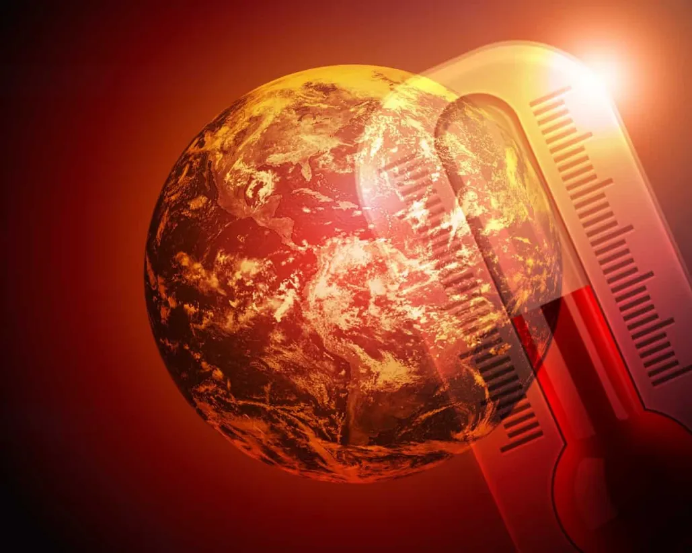
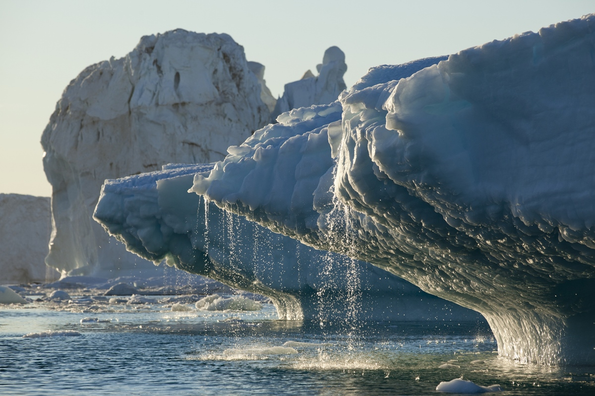

Os problemas do aquecimento global
Hoje em dia, o derretimento das calotas polares é um dos problemas mais sérios que a gente enfrenta no planeta. Isso acontece por causa do aquecimento global, que vem afetando o ambiente de forma bem agressiva. Quando a temperatura da Terra aumenta, grandes pedaços de gelo se soltam e vão parar no oceano, o que acaba elevando o nível da água.
Isso pode causar uma série de problemas, como inundações em cidades litorâneas, mudanças no clima, tsunamis e até alterar a velocidade das correntes marítimas. Fora que os desastres naturais também podem ficar mais frequentes e mais intensos por conta dessas mudanças. É um efeito em cadeia que afeta o mundo inteiro.

Como funciona a nossa solução?
Monitorar o degelo nas regiões polares e em cidades costeiras para medir o nível da água em tempo real usando sensores, e fornecer alertas e ações sugeridas para empresas globais, a fim de diminuir o aquecimento global e conscientizar os problemas causados pelo derretimento. Assim informando as providências necessárias para diminuir o aquecimento global, consequentemente diminuir os deslizamentos e derretimentos de gelo.
Nossa solução propõe o monitoramento contínuo do degelo em regiões polares e áreas costeiras vulneráveis, utilizando sensores de alta precisão que medem o nível da água em tempo real. Esses dados são analisados por inteligência artificial e transformados em alertas com sugestões de ações específicas para empresas, governos e organizações. O objetivo é não apenas alertar sobre os riscos da elevação do nível do mar, mas também propor medidas para mitigar o aquecimento global.
A plataforma integra relatórios personalizados, projeções climáticas e recomendações técnicas, adaptadas a cada região ou setor. Buscamos parcerias com centros de pesquisa, universidades e órgãos ambientais para garantir a credibilidade dos dados e fomentar políticas públicas baseadas em ciência.
O degelo polar, impulsionado pelo aquecimento global e pelas emissões de CO₂, CH₄ e N₂O, contribui diretamente para o aumento do nível do mar, provocando inundações, erosão, deslocamento populacional e perda de biodiversidade. Também altera padrões climáticos globais, intensificando eventos extremos como furacões, secas e enchentes, com impactos severos na agricultura, saúde pública e segurança hídrica.
Frente a esse cenário, é essencial implementar políticas eficazes, investir em energias limpas, adotar práticas sustentáveis e promover a educação ambiental. O uso de tecnologias como a nossa é um passo essencial para combater o aquecimento global e garantir um futuro sustentável para as próximas gerações.